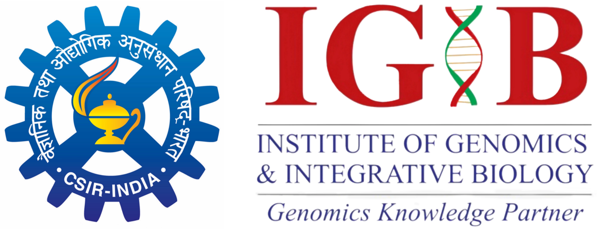

💊
Antimicrobial Resistance
Mechanisms, surveillance and strategies to counter drug-resistant pathogens.

Satellite Meeting of RESISFORCE 2026
Uniting global science to outsmart microbes and safeguard health.
Integrative Approaches in Health and Wellness (scientific programme: Integrative Approaches in One Health, AMR and Wellness using Omics) is a three-day satellite meeting of RESISFORCE 2026, hosted by the CSIR-Institute of Genomics and Integrative Biology (CSIR-IGIB), New Delhi, as the Genomics Knowledge Partner.
The meeting brings together researchers, clinicians, microbiologists, computational biologists and public-health experts to discuss how genomics, data science and One Health thinking can help us understand microbial threats, slow the spread of antimicrobial resistance and protect human, animal and environmental health.
Mechanisms, surveillance and strategies to counter drug-resistant pathogens.
Microbial communities, biofilm biology and their role in oral and systemic health.
Sequencing, bioinformatics and AI/ML approaches for microbial and host data.
Connecting human, animal and environmental health for collective resilience.
Integrative Approaches in One Health, AMR and Wellness using Omics
Delhi, India. (Add exact hall / auditorium and address here.)
For registration, abstract submission and sponsorship queries, please contact the organising committee.
Add email / registration link here.